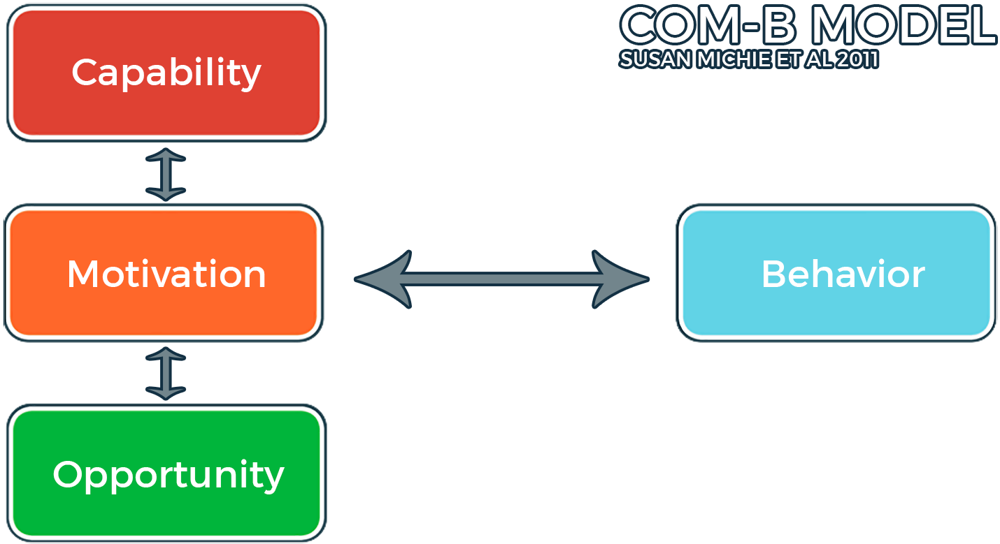
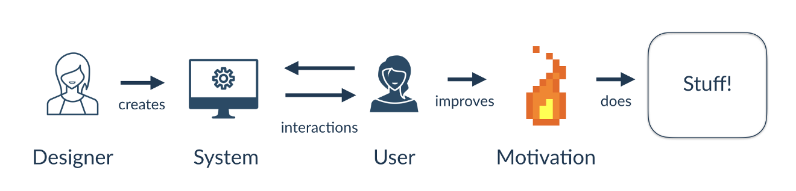
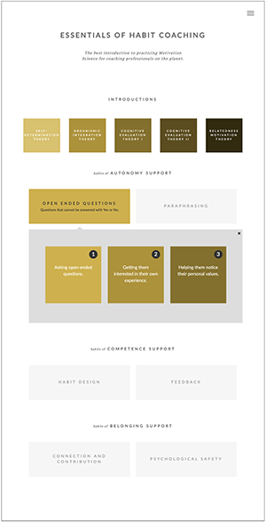

The Mission
In 2014, Omar teamed up with Habitry co-founders Steven M. Ledbetter and Vanessa Naylon to work on our mission of "helping the most people to help the most people" by making products for health coaches.
After launching Habitry iOS, coaches began to ask Habitry for a more comprehensive education product that would enable them to bring the behavioral psychology techniques they had been introduced to in the iOS app into real world settings.
A Learning Design Problem
Thanks to Motivation and Behavior Change Science, we've known how to help people change their behavior for over 40 years.
Yet the practical know-how from this vast evidence base has remained out of the reach of coaching professionals.
Because building coaching competence takes time, resources, and a high-touch, costly approach. So the coaching industry remains filled with quackery, employee disengagement, and turnover.
What if there was a way to productize health coach education so more coaches could help more clients?
The Approach
As with Habitry iOS, we took a Lean UX approach to figuring out potential customer pain points, testing potential solutions, and evaluating our ongoing efforts to iterate rapidly toward the right product. This meant getting a front-end up first, then using off-the-shelf tools to make a webapp that could be adapted and iterated on.
This was Habitry's first Learning Design product. We leaned heavily on the approach to Learning Design developed by Julie Dirksen and the Lens of Intrinsic Skill Atoms developed by Sebastian Deterding.
Discovery
On the advice of Angel Investor Jesse Robbins, Habitry started a series of Unconferences — The Motivate Summits. These open, unscripted gatherings proved to be a fertile ground for exploring the non-technical approaches that health coaches were using, and the great lengths to which they were going to scale their businesses into "the other 167 hours" a week they were not with their clients.
Once Habitry had customers using Habitry iOS, we also brought in those customers for interviews. These interviews highlighted gaps between between the skills they had and wanted to learn, and their learning experiences with the solutions they were already using to improve their coaching skills.
Ideation
Defining Requirements
Using notes from the Discovery process, we developed personas of coaches to guide us through the ideation process. Initial customer development suggested our product would have to:
- Be available cross-platform
- Empower coaches to interact with and support each other
- Generate daily content
- Deliver coaches daily feedback on their progress
- Be based on a UI they were already familar with
- Grow and include new coaches at wildly differing skill levels
Motivating User Behavior
Next we conducted a behavioral analysis to examine barriers and opportunities to motivate coaches to take action to build their skills. The diagram below was inspired by Dustin DiTomasso and Amy Bucher of mad*pow.
One of the first things that stood out to us was that health coaches did not have an alternative for long-term skills education. Most coaches got a certification, then no other feedback on their skill development for the rest of their career. To state the obvious, becoming a better coach required practice. Early in their career, most coaches did not know how to practice, and they lacked the confident to try new skills with clients.
| PSYCHOLOGICAL CAPABILITY | Coaches lacked knowledge and skill in motivating behavior change with clients. |
| PHYSICAL CAPABILITY | — |
| REFLECTIVE MOTIVATION | Coaches lacked confidence and didn't value supporting Basic Psychological Needs. |
| AUTOMATIC MOTIVATION | Coaches needed to experience success in each client session to keep practicing. |
| PHYSICAL OPPORTUNITY | Coaches needed time and energy in their daily schedule to practice new skills. | SOCIAL OPPORTUNITY | Coaches needed a peer group to practice new skills without fear of judgement. |
Design Tactics
We aimed to increase Capability, Motivation, and Opportunity by selecting appropriate Behavior Change Techniques.

Improving Capability
We improved Capability by targeting Knowledge and Skills. We provided information on how to support client habit formation and motivation. We developed skills-based training and workshops based on Self-Determination Theory, Dual-Process Model of Habit Formation, and Motivational Interviewing.
We used the Behavior Change Techniques of Shaping Knowledge, Demonstration of Behavior, and Habit Formation.
Improving Motivation
The next step was to improve Motivation. We improved motivation by targeting Beliefs about Capabilities, Optimism, Goals, and Professional Identity. We used the Behavior Change Techniques of Goal-Setting, Action Planning, and Behavioral Contracts.
We supported coach Autonomy with the provision of Meaningful Choice, Rationales, and Avoidance of Control.
We supported coach Competence by Clarifying Expectations, providing Optimal Challenge, and giving Meaningful Feedback.

Improving Opportunity
We improved Opportunity by targeting Environmental Restructuring. We used the Behavior Change Techniques of Prompts/Cues, Covert Learning, Valued Self-Identity, and Social Support.
We create performance aids to support practice while coaches were with peers and clients. We also supported Relatedness by creating a community with ongoing Connection, Collaboration, and Compassion from peers.
Killer Feature: Essentials of Habit Coaching
The core feature of Habitry Professionals was Essentials of Habit Coaching, a seven week digital learning program that taught health coaches the fundamental skills of supporting client behavior change, and inducted them into the Habitry Professionals community.
At the end of Essentials coaches were given the opportunity to coach under observation and be given expert feedback on their mastery of the Essential Habit Coaching Skills they learned in the program.
Our patented and trademarked "Habitry Evaluation Logic Level" gave coaches motivational feedback on how much they improved, and what areas they needed to focus on in order to keep their Motivator status.
Later on, the team developed an algorithm for analyzing and delivering motivating feedback that would become the core of Habitry's product and content auditing tools.
The Product
Results
In 2016, Habitry sold Habitry Professionals to Lift the Bar in the UK. It is now the largest, evidence-based behavior change education system in the UK and part of the largest experiment in autonomy-supportive education in the world.